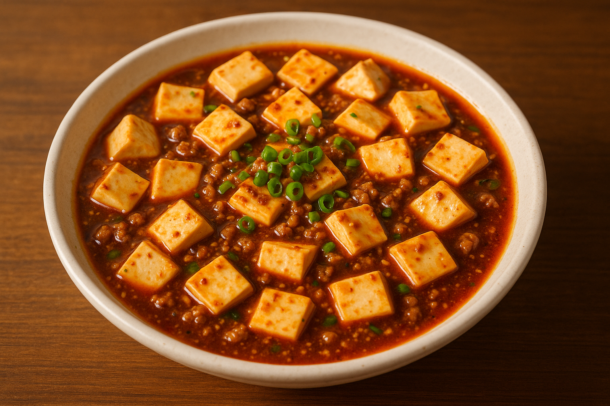

麻婆豆腐
作り方
- ベースのスープを全て入れ、よくかき混ぜる。
- 豆腐を切り、沸騰した水で1分間茹でる。
- フライパンに油を大さじ1程度入れて、よく温める。
- 豚ひき肉を入れ、強火でカリッとなるまで炒める。
-
油が透明になった後、弱火で以下の調味料を入れる。
①豆板醤小さじ1 ②にんにく小さじ1 ③生姜小さじ1/3
- 香りがでるまで炒めた後、甜麺醤を小さじ1強入れる。
- よくかき混ぜ豆腐を入れる。
- 豆腐が色づいたら、スープを投入する。
- 強火で1分煮立たせ、ネギを入れる。
- 火を切って、鍋を回しながら水溶き片栗粉を入れる。
- もう一度火をつけて、ラー油とごま油を少し入れる。
- 30秒間強火で、鍋を回しながら炒めて "完成"。
